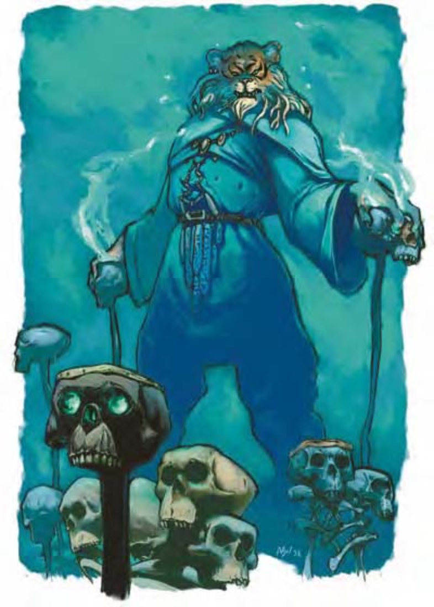

他们像是穿着高贵的人形老虎。身体主要是人类，但有华丽的虎皮外套与虎头。
有些人说邪兽鬼是邪恶具体的化身。少有生物能够比他们恶毒。
近看会发现邪兽鬼的手心其实是人类手背。但这不会影响其双手灵巧的程度，只会让不熟悉他的生物感到更不安。
邪兽鬼的身高体重与人类相同。
邪兽鬼通晓通用语、炼狱语与地底通用语。
近战时，邪兽鬼会使用利爪与啮咬攻击，但他们将近战视为一种可耻的行为。他们会尽可能使用其他能力来避免此类遭遇。
侦测思想 (超自然)：邪兽鬼可以持续侦测在周围生物的思想，这个能力功用与「侦测思想」法术类似 (施法者等级18；通过意志检定则无效，DC=15)，效果永久有效。邪兽鬼可随时压抑或启用这个能力，均视为即时动作。豁免检定DC的调整值与魅力调整值相同。
法术：邪兽鬼施法时视同7级术士。
一般已知术士法术 (6/7/7/5；豁免检定DC=13+法术等级)：
零级――「侦测魔法」、「光亮术」、「法师帮手」、「传讯术」、「阅读魔法」、「提升抗力」、「疲乏之触」；
一级――「魅惑人类」、「法师护甲」、「魔法飞弹」、「护盾术」、「无声幻影」；
二级――「坚韧术」、「隐形」、「马友夫强酸箭」；
三级――「加速术」、「暗示」。
移形 (超自然)：使用一个标准动作，邪兽鬼可化为任何人形生物形态或变回天生形态。人形生物形态时，邪兽鬼无法进行爪抓及啮咬攻击，但通常会配戴武器以补足。除非邪兽鬼选择改变形态，否则即保持原来形态。移形无法被解除，但邪兽鬼遭杀害后就会恢复天生形态。法术「真实日光」可看到其天生形态。
技能：邪兽鬼在进行「哄骗」与「易容」检定时具有+4种族加值。
*移形后，进行「易容」检定时具有额外的+10环境加值。如果读取对手思想，则进行「哄骗」与「易容」检定时的环境加值进一步再+4。
邪兽鬼人物具有下列种族特性：
― +2力量、+4敏捷、+6体质、+2智力、+2感知、+6魅力。
― 中型。
― 邪兽鬼的基本行走速度为40英尺。
― 黑暗视觉可达60英尺。
― 种族生命骰：邪兽鬼起始为7级异界生物，生命骰7d8、基本攻击加值+7，强韧、反射与意志的基本豁免检定则分别是+5、+5及+5。
― 种族技能：邪兽鬼的异界生物等级使他的技能点数成为10x (8+智力调整值)。他的本职技能为哄骗、易容、聆听、潜行、表演、察言观色与侦察。
― 种族专长：邪兽鬼的异界生物等级具有三个专长。
― +9天生防御加值。
― 天生武器：啮咬 (1d6) 及2爪抓 (1d4)。
― 「侦测思想」(超自然)：豁免检定DC=13+人物魅力调整值。
― 法术：邪兽鬼人物施法时视同7级术士。若术士等级提升，则累加于基本施法能力上，包含已知法术、每日法术数量及其他与施法者等级相关的效果。例如：2级的邪兽鬼术士与一般9级术士的已知法术、每日法术数量、施法者等级相同。同样地，邪兽鬼的种族施法等级和职业等级须累加以决定其他相关能力。
― 特殊能力 (见前文)：移形、伤害减免15/善良且穿刺、法术抗力27+职业等级。
― 母语：通用语、炼狱语。额外语言：木族语、地底通用语。
― 适合职业：术士。
― 等级修正值：+7。
| 生命骰 | 7d8+21 (52HP) |
| 先攻 | +2 |
| 速度 | 40英尺 (8格) |
| 防御等级 | 21 (+2敏捷、+9天生)、接触12、措手不及19 |
| 基本攻击/擒抱 | +7 / +8 |
| 攻击 | 爪抓+8近战 (1d4+1) |
| 全力攻击 | 2爪抓+8近战 (1d4+1) 及啮咬+3近战 (1d6) |
| 占据/触及 | 5英尺 / 5英尺 |
| 特殊攻击 | 侦测思想、法术 |
| 特殊能力 | 移形、伤害减免15/善良且穿刺、黑暗视觉60英尺、法术抗力27 |
| 豁免 | 强韧+8、反射+7、意志+6 |
| 属性 | 力量12、敏捷14、体质16、智力13、感知13、魅力17 |
| 技能 | 哄骗+17*、专注+13、交涉+7、易容+17 (扮演+19)*、威吓+5、聆听+13、潜行+13、表演 (演说)+13、察言观色+11、法术辨识+11、侦察+11 |
| 专长 | 警觉、战斗施法、闪避 |
| 环境 | 热暖带沼泽 |
| 组织 | 单独 |
| 宝藏 | 标准钱币、双倍宝物、标准物品 |
| 阵营 | 总是混乱邪恶 |
| 进化 | 视人物职业而定 |
| 等级修正值 | +7 |